의공기사 (2016-10-01 기출문제)
1과목: 기초의학 및 의공학
1. 다음 ( ) 안에 알맞은 것은?
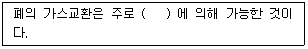
- 이온의 농도차이
- 전해질 운반 기능의 차이
- 발산(살포, 유포, 확산)
- 흉막내의 압력 정상화
(정답률: 81%)

2. 인체 내의 특정 부위의 전위를 측정하거나 특정 부위에 전기적 자극을 가하기 위해 인체 내부에 삽입하는 전극은?
- 미세전극(micro electrode)
- 내부전극(internal electrode)
- 가요성전극(flexible electrode)
- 감흥전극(calomel electrode)
(정답률: 79%)
3. 다음 중 바이러스나 독성 물질 등에 의해 간이 손상되거나 간세포에 염증이 생기는 증상을 무엇이라 하는가?
- 백혈병
- 간경화
- 간염
- 간부종
(정답률: 93%)
4. 다음 중 가동성 관절의 종류에 대한 설명으로 가장 옳은 것은?
- 평면관절 : 두 관절면이 평면이고 좁은 관절낭과 강한 인대로 싸여 있어 운동이 매우 제한된 관절이다.
- 접번관절 : 관절머리 쪽에는 공 모양이고 오목하고 깊어 운동성이 가장 큰 관절로 무한하며 다양한 평면에서의 움직임을 할 수 있다.
- 차축관절 : 관절머리 쪽이 타원형이며 장·단축의 운동을 하는 2축성 관절로 움직임은 가능하나 회전은 불가능하다.
- 과상관절 : 두 관절면이 말 안정 모양처럼 생긴 것으로 서로 직각 방향으로 움직이는 이축성관절이다.
(정답률: 87%)
5. 다음 중 고혈압의 원인이 아닌 것은?
- 동맥경화
- 고지혈증
- 중성지방
- 저염식이
(정답률: 97%)
6. 다음 중 수의적으로 조절되는 근육은?
- 심장근
- 모양체근
- 유문괄약근
- 이두박근
(정답률: 88%)
7. 화학센서의 측정 대상 물질이 아닌 것은?
- 혈중 콜레스테롤 수치
- 산소 분압
- 혈압
- 혈당
(정답률: 71%)
8. 전극과 전해질에서 이온의 집적(accumulation)으로 인하여 기전력이 발생하는데, 이것이 발생하기 가장 쉬운 곳은 금속과 용액의 접촉면이며, 대단히 제멋대로인 현상이라 그때마다 정도가 달라 생체 전위의 측정에서 일정한 결과를 얻을 수 없는 경우가 많다. 이를 무엇이라 하는가?
- 변위전류(displacement current)
- 반전지 전위(half-cell potential)
- 과전위(overpotential)
- 분극(polarization)
(정답률: 72%)
9. 심장의 활동전위의 전도계에 해당되지 않는 것은?
- 동방결절(sinoatrial node)
- 방실결절(atrioventricular node)
- 심실중격(interventricular septum)
- 히스속(bundle of His)
(정답률: 93%)
10. 인체의 상태가 외부의 환경 변화에 불구하고 비교적 일정하게 조절되는 기전을 무엇이라 하는가?
- 순응성
- 대칭성
- 항상성
- 혐기성
(정답률: 95%)
11. 어떤 변환기에 작용하는 출력 전압을 계산하기에 용이한 계수는?
- 변환계수
- 게이지계수
- 감도계수
- 비례계수
(정답률: 56%)
12. 대기 중의 산소 분압과 정상인에게 측정된 폐포내의 산소 분압 그리고 폐정맥에서 헤모글로빈과 산소의 결합률을 순서대로 바르게 나열한 것은?
- 150 mmHg, 100 mmHg, 70~75%
- 100 mmHg, 40 mmHg, 70~75%
- 150 mmHg, 100 mmHg, 98~100%
- 100 mmHg, 40 mmHg, 40~45%
(정답률: 78%)
13. 흡착전극(Suction electrode)에 대한 설명으로 옳은 것은?
- 전극을 피부에 고정하기 위한 접착 밴드가 꼭 필요한 전극이다.
- 움직임에 의한 동적잡음이 작아 소아용으로 가장 많이 사용된다.
- 속이 빈 금속 실린더 전극으로, 고무구(rubber bulb)가 전극 뒤편에 붙어 있어 고무공을 압박한 상태에서 체표면에 붙이고 음압으로 체표면에 접촉한다.
- 완전 분극성의 내부전극(Internal electrode)으로 주파수 특성이 우수하며, 동잡음에 대한 강인한 특성을 가진다.
(정답률: 86%)
14. 세포막에서 이온을 이동시키는 방법이 아닌 것은?
- ATP를 소모하는 운반체에 의해 이동하기도 하며 이러한 운반체는 특정한 이온만을 선택적으로 이동시키는 특성이 있다.
- 이온 채널을 통해 작은 이온(Na)이 확산된다.
- 특정 이온(Na)이 농도 차이에 따라 확산되는 성질을 이용하여 당(glucose)이나 단백질(protein) 등이 함께 세포 내로 이동하는 운반체가 존재한다.
- 이온 채널은 특정한 이온을 농도가 낮은 쪽에서 높은 쪽으로만 이동시키면서 에너지를 얻는다.
(정답률: 86%)
15. 금속평행판 축전기를 이용한 용량성 센서에서 판의 간격을 2배로 하면 정전용량은?
- 이전과 같다.
- 2배가 된다.
- 1/2로 된다.
- 1/4로 된다.
(정답률: 80%)
16. 피부의 가장 외부에 위치하며, 케라틴(Keratin) 이라는 단백질로 구성되어 있어 전극과 피부표면의 등가회로에서 가장 높은 저항을 가지고 있어, 전극 부착 시 제거하여 측정하도록 하는 것은?
- 진피층
- 각질층
- 기저층
- 과립층
(정답률: 94%)
17. 뼈에 생기는 악성종양을 무엇이라 하는가?
- 연골종
- 연골모세포종
- 골성골종
- 골육종
(정답률: 86%)
18. 제벡(Seebeck) 효과로 인해 온도가 다른 두 접점 사이에서 직접 측정할 수 있는 물리량은?
- 전압
- 기전력
- 저항
- 정전용량
(정답률: 83%)
19. 세포막의 능동적 이동에서 운반체에 의한 수송기전이 갖는 3가지 특성이 아닌 것은?
- 특이성 : 각각 수송되는 물질은 특정한 분자와만 결합하는 특이성
- 경쟁 : 유사한 분자들이 한 개의 운반체에 경쟁적으로 결합
- 촉진적 확산 : 전기화학적 경사도에 따른 촉진적 확산
- 포화 : 막을 통과하는 분자의 수송비율이 운반체에 의해 제한되는 포화 현상
(정답률: 74%)
20. 반도체의 접합부에 빛이 조사되면 전자와 정공의 흐름이 생겨 기전력이 발생하는 현상은?
- 광도전 효과
- 광전자 방출 효과
- 집전 효과
- 광기전력 효과
(정답률: 91%)
2과목: 의용전자공학
21. 다음 논리 함수를 간단히 하면?
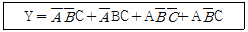
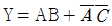
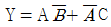
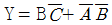
- Y = A
(정답률: 85%)
22. 이미터 공통회로에서 IB=1μA, IC=0.5mA 가 흐르는 이미터 접지방식의 전류 증폭률(β)은?
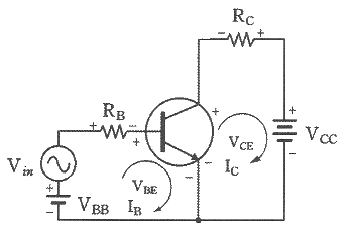
- 100
- 300
- 500
- 600
(정답률: 78%)
23. 심전도 측정 시 주위사항으로 가장 거리가 먼 것은?
- 근전도의 혼입
- 교류(60 Hz) 장애
- 기저선의 호흡성 변동
- 검사실 청결상태
(정답률: 92%)
24. 실리콘 pn 접합 다이오드의 특성에 대한 설명으로 틀린 것은?
- p형에서 n형 방향으로 순방향 전류가 흐르며, 이 때 0.6V~0.7V 정도의 전압강하가 발생한다.
- 순방향 전압강하는 접합온도가 증가할수록 낮아진다.
- 역방향 전압이 매우 높아지면 역방향 항복현상이 발생한다.
- 불순물 농도가 매우 높은 pn 접합 다이오드의 역방향 항복전압은 대단히 높다.
(정답률: 61%)
25. 신호 x(t)를 한 번 적분하였을 때, 푸리에(Fourier) 변환된 X(jω)의 주파수 변화의 표현으로 옳은 것은?
- jωX(jω)
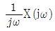
- w2X(jω)
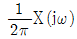
(정답률: 88%)
26. 마이크로프로세서의 성능을 비교하기 위한 척도로 적절하지 않은 것은?
- 마이크로프로세서의 가격
- 처리하는 워드의 길이
- 클록 펄스
- 명렁어 처리 속도
(정답률: 94%)
27. 심전도에 대한 설명으로 틀린 것은?
- 심장근육이 탈분극에 따른 활동전위의 체표전위이다.
- 심장의 이상 유무를 확인할 때 사용한다.
- 협심증, 심근경색, 부정맥 등의 심장질환 진단에 사용한다.
- 생체 신호 중 60 Hz 의 주파수 대역을 가진다.
(정답률: 85%)
28. 주어진 인덕턴스의 병렬회로에 관련한 관계식으로 틀린 것은?
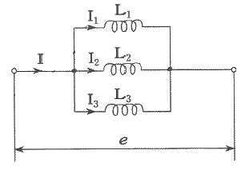
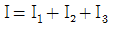
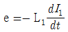
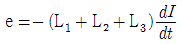
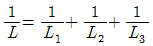
(정답률: 76%)
29. 펄스변조 방식 중 아날로그 신호의 크기에 따라 펄스의 위치를 변화시켜 변조하는 방식은?
- DM(Delta Modulation)
- PCM(Pulse Code Modulation)
- PPM(Pulse Position Modulation)
- PFM(Pulse Frequency Modulation)
(정답률: 84%)
30. 다음에 주어진 카르노 맵을 간략화하면?
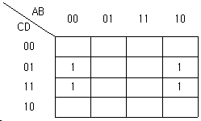
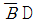
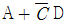
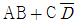
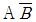
(정답률: 76%)
31. 신체로부터 분리된 생체조직에 센서를 이용하여 측정하는 방식은?
- 외부 측정
- 침습적 측정
- 표면 측정
- 샘플 측정
(정답률: 92%)
32. 도체 내부에서 두 점 사이에 10 C의 전하를 옮기는데 50J의 에너지가 필요하였을 때, 두 점 사이의 전압은 몇 V 인가?
- 0.5
- 5
- 50
- 500
(정답률: 85%)
33. 실리콘 트랜지스터를 사용한 전압분배 바이어스 회로에서 이미터에 걸리는 전압(VE)은 약 몇 V 인가? (단, R1=20kΩ, R2=10kΩ, RE=1kΩ, RC=2kΩ, VCC=10V, βdc=150 이다.)
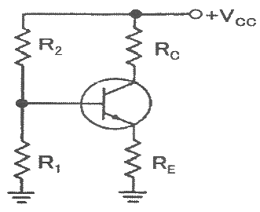
- 2.63
- 5.97
- 6.67
- 7.67
(정답률: 60%)
34. 변압기의 1차권선과 2차권선의 비율이 1:2이다. 입력전압이 10V일 경우 출력 전압은 몇 V 인가?
- 5
- 10
- 20
- 40
(정답률: 86%)
35. EEG 10-20 전극 배치법에 대한 설명으로 틀린 것은?
- 가장 보편적으로 이용되는 전극 배치법이다.
- EEG 전극명에 붙는 짝수는 왼쪽 두뇌에, 홀수는 오른쪽 두뇌에 위치하는 전극을 의미한다.
- 전후면의 비근(nasion)과 뒤통수점(inion), 측면부의 양족 귓바퀴앞점(preauricular point) 사이를 분할하여 그 교점을 전극지점으로 한다.
- 10과 20은 전극지점 상호 간의 간격이 각각 10%와 20%로 구성되도록 배치하는 것을 의미한다.
(정답률: 82%)
36. 호흡기의 기능평가법으로 측정이 필요한 생체변수로 틀린 것은?
- 기체압력
- 혈류속도
- 폐용적(부피)
- 기체농도
(정답률: 88%)
37. 참값과 측정된 값과의 차이를 참값으로 나눈 것으로 보통 퍼센트(%)로 표현하는 것은?
- 선택도
- 정확도
- 정밀도
- 해상도
(정답률: 90%)
38. CPU를 주변장치와 연결하고 데이터 신호를 받아들이거나 제어신호를 출력하는 인터페이스 장치는?
- I/O 포트
- 보조기억장치
- 레지스터
- ALU
(정답률: 90%)
39. 높은 전압이득과 ‘I’인 전류이득을 가지며, 매우 낮은 입력 저항을 가지는 소신호 증폭기는?
- 공통 이미터 증폭기
- 공통 베이스 증폭기
- 공통 컬렉터 증폭기
- 달링턴 증폭기
(정답률: 69%)
40. 변위전류와 관계가 가장 깊은 것은?
- 반도체
- 자성체
- 유전체
- 도체
(정답률: 75%)
3과목: 의료안전·법규 및 정보
41. 등전위에 대한 설명으로 틀린 것은?
- 둘 이상의 전기기기를 동시에 사용할 때 접지점을 한 곳에 모이게 하는 것이다.
- 접지점을 여러개 사용해도 각각의 접지점은 접지가 되어 있으므로 전위는 같게 된다.
- 벽의 접지단자나 창틀, 손잡이, 수도꼭지 등의 사이에서 전위차가 존재할 수 있다.
- 접지점을 2점이나 3점으로 하면 접지선을 매개로 하여 전류가 인체에 흘러 들어갈 수 있다.
(정답률: 63%)
42. 인간의 전문성을 요구하는 특정 응용분야에 관한 전문가의 지식을 지식베이스에 저장하고 추론기관을 이용하여 문제에 적용하여 해결책을 제시하는 시스템은?
- 인공지능 시스템
- 전문가 시스템
- 신경회로망 시스템
- 퍼지 시스템
(정답률: 85%)
43. PACS(Picture Archiving and Communication System)의 임상적 파급효과 중 틀린 것은?
- 영상자료의 교육활용 용이
- 자료공유로 협동연구 원활
- 영상정보 교환에 따른 표준이 불필요
- 실시간 판독, 자동화에 의한 진료능률 향상, 방사선과 진료의 지역 분산화
(정답률: 88%)
44. 다음은 환자누설전류에 대한 설명이다. ( )안의 내용으로 옳은 것은?
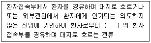
- B형 장착부
- BF형 장착부
- F형 장착부
- 내제세동장착부
(정답률: 54%)
45. 초전도 MRI 장치에 대량으로 사용되는 가스는?
- 액체 산소
- 질소
- 아산화질소
- 액체 헬륨
(정답률: 81%)
46. 의료기기법령상 의료기기의 용기나 외장에 반드시 기재해야 할 사항이 아닌 것은?
- 중량
- 제조번호
- 사용방법
- 제조업자 또는 수입업자의 주소
(정답률: 84%)
47. 의료기기법상에 정의된 ‘의료기기’에 해당되지 않는 것은?
- 질병의 진단 또는 예방의 목적으로 사용되는 제품
- 장애의 진단 또는 보정의 목적으로 사용되는 제품
- 임신조절의 목적으로 사용되는 제품
- 장애인 보조기구 중 보조기 제품
(정답률: 87%)
48. 의료영상의 촬영과 동시에 대용량 기억장치에 저장시켜 영상의학과 전문가가 모니터를 통해서 판독할 수 있도록 해주는 기기는?
- OCS
- DICOM
- PACS
- HL7
(정답률: 75%)
49. 컴퓨터에서 사용하는 정보 양의 단위인 1메가바이트(MB)는 다음 중 어느 것과 동일한가?
- 100 바이트
- 1024 바이트
- 1048576 바이트
- 1000000 바이트
(정답률: 88%)
50. 다음 중 전자의무기록 구축 시 고려 사항이 아닌 것은?
- 임상병리과의 고유 업무와 진료, 원무행정을 연계하여 구축한다.
- 의학용어의 표준화가 필요하다.
- 소프트웨어 면에서 적절한 DBMS를 선택하여야 하고 인터넷의 보급 및 웹브라우저 기반의 인터페이스를 제공하여야 한다.
- 어휘 총목록과 의미론적 그물망을 제공하고 Information Source Map을 통해 유연한 확장성을 제공하여야 한다.
(정답률: 71%)
51. 다상인 경우의 전원전압에 대한 설명으로 옳은 것은?
- 두 개의 위상선 사이의 전압
- 중성선 전압
- 중성선과 선간의 전압
- 보호접지선에 흐르는 전압
(정답률: 77%)
52. 코드화는 개별적인 대상에게 항목별로 숫자나 문자 또는 이들의 조합을 부여하는 것이다. 다음 코드에 대한 설명으로 틀린 것은?
- 연상기호(문자) 코드 : 하나 이상의 문자를 통하여 그 항목이 연상되기 쉽게 만들며 많은 양의 분류에서는 무척 긴 코드가 생성되는 방법
- 조합코드 : 치료과정의 행위, 기구, 목적, 해부학적 위치를 순서로 배열하여 이용하는 방법
- 숫자코드 : 순차적으로 만들며 새로운 항목에는 새로운 코드의 생성이 곤란하고 난수를 이용하여 환자의 특정한 정보를 생성할 수 있는 방법
- 계층구조 코드 : 이미 나와 있는 간단한 코드에 하나 이상의 문자를 추가하여 새롭고 더 자세한 코드를 만드는 방법
(정답률: 68%)
53. 2가지 이상의 의료기기를 하나의 포장단위로 구성한 의료기기를 무엇이라 정의하는가?
- 일회용 의료기기
- 조합 의료기기
- 첨단 의료기기
- 한벌구성 의료기기
(정답률: 77%)
54. 의료기기법령상 의료기기의 수리업자가 준수하여야 할 사항이 아닌 것은?
- 허가를 받거나 신고한 내용과 다르게 변조하여 의료기기를 수리하지 말 것
- 의료기기를 수리한 경우에는 상호를 해당 의료기기의 용기에 기재할 것
- 의료기기의 수리를 의뢰한 자에 대하여 수리내역을 문서로 통보할 것
- 수리 후 적합한 경우에만 검사필증을 붙일 것
(정답률: 76%)
55. 우리나라에서 의료보험이 최초로 시작된 시기는?
- 1978년
- 1989년
- 1995년
- 2000년
(정답률: 78%)
56. 현수지지특성이 마모, 녹, 재료의 노화나 경시변화에 의해 손상될 우려가 없는 경우, 모든 현수지지부품의 안전율 기준은?
- 안전율을 2 이상으로 할 것
- 안전율을 4 이상으로 할 것
- 안전율을 5 이상으로 할 것
- 안전율을 8 이상으로 할 것
(정답률: 77%)
57. 데이터베이스의 생명주기로 올바른 것은?
- 요구조건 분석 – 설계 – 구현 – 운영 – 감시 및 개선
- 요구조건 분석 – 설계 – 운영 – 구현 – 감시 및 개선
- 설계 – 요구조건 분석 – 구현 – 운영 – 감시 및 개선
- 설계 – 요구조건 분석 – 운영 – 구현 – 감시 및 개선
(정답률: 85%)
58. 환자에게 열을 주는 것을 의도하지 않는 기기의 장착부 표면온도는 몇 도를 초과하면 안 되는가?
- 30℃
- 36℃
- 38℃
- 41℃
(정답률: 83%)
59. 심장 정지를 일으킬 수 있는 심실 세동의 전류값은?
- 1 μA
- 10 μA
- 10 mA
- 100 mA
(정답률: 66%)
60. 의료기기법령상에서 제시하는 의료기기 임상시험 실시기준에 해당하지 않은 것은?
- 임상시험계획서에 의하여 안전하고 과학적인 방법으로 실시할 것
- 식품의약품안전청장이 지정하는 임상시험기관에서 실시할 것
- 임상시험은 임상시험계획의 승인 또는 변경 승인을 얻은 날부터 2년 이내에 개시할 것
- 임상시험 전에 임상시험자료집을 임상시험자에게 비공개로 할 것
(정답률: 91%)
4과목: 의료기기
61. 초음파 진단기에 이용되는 물리적 현상에 대한 설명으로 옳은 것은?
- 반사 : 여러 가지 물질이 혼재되어 있을 때 잘 일어나는 현상이다.
- 굴절 : 서로 다른 매질의 경계면에서 음파 진행 방향이 바뀌는 현상이다.
- 산란 : 서로 다른 매질 사이의 경계면에서 음파가 돌아오는 현상이다.
- 흡수 : 반사, 굴절, 산란 등의 종합적인 영향으로 음파의 에너지가 점차 작아지는 현상이다.
(정답률: 83%)
62. 다음 마취기의 구성도를 살펴보면 크게 가스공급부와 호흡회로부로 나눌 수 있는데 마취가스 제거장치는 어느 곳에 위치하는가?
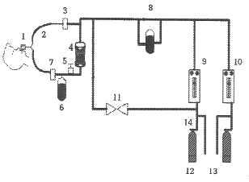
- 1
- 2
- 5
- 11
(정답률: 84%)
63. 다음의 X-선 CT 성능지표 중 공간주파수별 분해능을 그래프로 표현하는 것은?
- 균일도(uniformity)
- SNR(signal-to-noise ratio)
- 정확도(accuracy)
- MTF(modulation transfer function)
(정답률: 81%)
64. 수액펌프의 종류 중 회전형 롤러가 장착되어 I.V(intravenous)관재료를 환자 측 방향으로 회전하면서 압축하여 유체의 흐름을 밀어내는 방식으로 동작하는 것은?
- 선형 연동펌프
- 회전형 연동펌프
- 교환형 피스톤펌프
- 횡격막형 피스톤펌프
(정답률: 89%)
65. 다음 중 전정기관의 기능과 안구운동을 관찰하는 생체신호 측정기기는?
- EEG
- EMG
- ENG
- ECG
(정답률: 73%)
66. 다음 중 체외충격파쇄석기의 특징으로 틀린 것은?
- 노약자나 대사성 질환자에게는 사용하기 힘들다.
- 다른 수술법과는 달리 반복 시술이 가능하다.
- 입원, 투약, 마취 등이 필요 없으므로 신체적 경제적 부담이 적다.
- 결석 주위 조직의 손상이 없으며, 마취나 피부절개, 통증 없이 신장, 요관, 방광, 결석 및 담낭 등의 치료가 가능하다.
(정답률: 81%)
67. 청력검사 시에 피검사의 뇌파를 활용하여 진단할 때에 관한 설명으로 틀린 것은?
- 수면상태에서 검사한다.
- 유아나 지체부자유자에게 적합하다.
- 전극을 심장부위에 부착한다.
- 평균덧셈법으로 인석여부를 판단한다.
(정답률: 79%)
68. 제세동기의 에너지 형태에 대한 설명으로 틀린 것은?
- 단상파형은 전류를 한 방향으로만 흐르게 한다.
- 단상파형을 사용하면 이중파형을 사용했을 경우보다 낮은 에너지로 큰 효과를 볼 수 있다.
- 이중파형은 전류가 한 극에서만 흐르지 않고 한 극에서 흐른 전류가 다른 극으로 이동해 파형의 모양이 위아래로 흔들리는 모양이 된다.
- 낮은 에너지를 사용하는 이중파형의 전기충격이 더 안전해서 심근의 손상이 적다.
(정답률: 75%)
69. 인공관절로 사용되고 있는 생체재료가 아닌 것은?
- 폴리프로필렌
- 세라믹
- 폴리에틸렌
- 코발트-크롬 합금
(정답률: 47%)
70. 임상진단기기 중 하나로 시료를 회전시켜 원심력 작용으로 특정 무게 또는 비중을 갖는 성분들이 서로 분리, 정제, 농축되는 원리를 이용하여 액체 속의 고체입자를 분리하는 장비는?
- 원심분리기
- 자동혈구계산기
- 혈액가스분석기
- 생화학분석기
(정답률: 93%)
71. 다음 중 MRI 영상화에 이용되는 원소는?
- 1H, proton
- 1H, neutron
- 1H, electrion
- 1H, deuteron
(정답률: 71%)
72. 전기자극치료기에 대한 설명으로 틀린 것은?
- 전기자극기와 자극용 전극을 사용하여 인체조직에 전기흐름을 유발한다.
- 신호발생기는 전원공급회로, 발진회로, 출력증폭회로 등으로 구성된다.
- 의료용으로 사용되는 전기의 종류는 평류전기, 감응전기, 교류전기 등이 쓰인다.
- 정전류자극기보다 정전압자극기가 더 바람직하다.
(정답률: 81%)
73. 초음파 트랜스듀서 내에서의 음속이 5000m/s인 경우 5 MHz의 공진주파수를 얻고 싶다면 트랜스듀서의 두께는 얼마인가?
- 0.5mm
- 1mm
- 5mm
- 10mm
(정답률: 44%)
74. 체열진단을 위한 적외선 센서 구조에 맞는 신호처리 과정을 올바르게 나열한 것은?
- 증폭기 → 흑체 → 초전체 → 광필터
- 흑체 → 초전체 → 증포기 → 광필터
- 증폭기 → 흑체 → 광필터 → 초전체
- 광필터 → 흑체 → 초전체 → 증폭기
(정답률: 69%)
75. 혈액투석에서 용질 제거 방법으로만 나열된 것은?
- 확산, 초여과
- 확산, 대류
- 대류, 초여과
- 확산, 대류, 초여과
(정답률: 72%)
76. 환자감시장치에서 마취환자의 자발호흡 상태 또는 환자의 환기상태를 평가할 수 있는 기능은?
- 심전도(ECG)
- 비혈관식 혈압(NIBP)
- 호기말 이산화탄소 분압(EtCO2)
- 혈중 산소포화 농도(SpO2)
(정답률: 82%)
77. 픽(Fick)법을 이용한 심박출량 측정에서 요구되는 측정항목이 아닌 것은?
- 폐동맥의 산소압력
- 폐정맥의 산소농도
- 폐동맥의 산소농도
- 폐동맥혈로 공급되는 산소량
(정답률: 68%)
78. 혈압측정법에서 혈관 내로 카테터를 삽입하고 카테터에 스트레인 게이지 타입의 압력센서를 연결하여 측정하는 혈압 측정 방법은?
- 오실로메트릭법
- 직접측정법
- 간접측정법
- 촉지법
(정답률: 87%)
79. 다음 중 PETI(Positron Emission Tomography)에서 사용되지 않는 방사성 동위원소는?
- Carbon-11
- Fluorine-18
- Qxygen-15
- Technetium-99m
(정답률: 75%)
80. ECG 전극유도에서 표준사지전극유도(VⅠ, VⅡ, VⅢ)와 증폭전극유도(aVL, aVR, aVF) 사이의 관계로 옳은 것은?
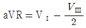
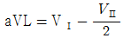
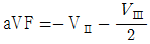
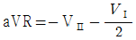
(정답률: 64%)
5과목: 의용기계공학
81. 나사의 사용 방법으로 틀린 것은?
- 3각나사 : 일반 결합용
- 4각나사 : 힘의 전달용
- 사다리꼴나사 : 가루가 나사산에 들어갈 염려가 있는 경우
- 톱니나사 : 한 방향에서 강한 힘이 작용하는 경우
(정답률: 77%)
82. 바이오 세라믹스의 특징으로 틀린 것은?
- 생체 친화성 재료이다.
- 경도가 높다.
- 파괴 인성치가 높다.
- 성형성이 좋지 않다.
(정답률: 59%)
83. 혈관의 두 지점에서 압력 차가 반으로 줄고 혈관의 직경이 2배가 될 때, 혈관에 흐르는 뉴턴 유체의 유량은?
- 변화가 없다.
- 2배 많아진다.
- 8배 많아진다.
- 16배 많아진다.
(정답률: 53%)
84. 의료용으로 사용되고 있는 스텐드나 가이드 와이어는 주로 니티놀(Nitinol) 형상기억합금으로 제조된다. 니티놀은 무게 백분율(weight percent)로 55.9 wt%의 니켈과 43.9 wt%의 티타튬으로 구성된 합금이다. 니티놀의 니켈과 티타늄의 원자 백분율(atomic percent)의 비율은? (단, 니켈 원자량 : 58.71 amu, 티타튬 원자량 : 47.90 amu 이다.)
- 0.64 : 1
- 1.04 : 1
- 1.28 : 1
- 1.55 : 1
(정답률: 62%)
85. 열과 관련된 용어의 설명으로 틀린 것은?
- 자연대류란 유체 내의 온도차에 따라 발생한 밀도 변화로 부력이 생기고 이 효과로 일어나는 열전달을 말한다.
- 전도에 의한 열전달은 전자기파 혹은 광자에 의해서 이루어진다.
- 비열이란 어떤 물질 1g의 온도를 1도 올리는데 필요한 열량을 말한다.
- 어떤 물질의 온도를 올리는데 사용된 총 열에너지를 열량이라고 한다.
(정답률: 70%)
86. 기어에서 압력각을 크게 하면 발생되는 효과로 옳은 것은?
- 언더컷이 심해진다.
- 물림률이 증가한다.
- 미끄럼률이 감소한다.
- 베어링에 걸리는 하중이 감소한다.
(정답률: 75%)
87. 데이크론(dacron)으로 불리는 고분자 재료롤 실을 짜듯 편직이나 제직하여 인공혈관 재료로 쓰이는 것은?
- 실리콘
- 폴리우레탄
- 탄소 섬유
- 폴리에스터
(정답률: 67%)
88. 다음 ( ) 안에 들어갈 적절한 용어를 순서대로 나열한 것은?
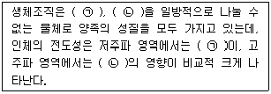
- ㉠ 도전율, ㉡ 유전율
- ㉠ 도전율, ㉡ 투자율
- ㉠ 투자율, ㉡ 유전율
- ㉠ 유전율, ㉡ 도전율
(정답률: 73%)
89. 골조직의 기계적 특성 평가에 주의하여야 하는 인자가 아닌 것은?
- 계면 전위
- 온도와 습도
- 부하의 방향과 속도
- 골 조직 시편을 채취한 후 경과한 시간
(정답률: 53%)
90. 포아송비(Posson’s ratio)에 대한 설명으로 옳은 것은?
- 하중에 대한 직각방향 변형률과 하중방향 변형률의 비이다.
- 마찰에서 수직력과 마찰력의 비율이다.
- 유속과 관련하여 직경과 저항의 비율이다.
- 유체의 측류와 난류의 형성비를 의미한다.
(정답률: 67%)
91. 혈관확작용 스텐트(stent)처럼 생체재료를 사용한 심혈관용 임플란트(implant)에 필요한 특성이 아닌 것은?
- 생체 적합성
- 혈액 적합성
- 생체 기능성
- 전기 절연성
(정답률: 84%)
92. 나사의 유효지름이 d이고, 리드가 L일 때 리드각은?
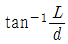
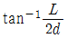
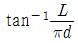
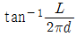
(정답률: 73%)
93. 생체에 대한 전기성질을 나타내는 물성치의 크기 관계가 잘못된 것은?
- 고주파에서의 저항률 ＜ 저주파에서의 저항률
- 저주파에서의 유전율 ＞ 고주파에서의 유전율
- 골격근의 저항률 ＜ 지방의 저항률
- 혈액의 도전율 ＜ 췌장의 도전율
(정답률: 64%)
94. 아이볼트의 축방향 인장하중이 20000kgf이고 허용인장응력이 40kgf/cm2일 때 이 나사의 지름은 몇 mm 인가? (단, 나사의 바깥지름을 d, 골지름을 d1라 할 때
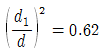
와 같이 작다.)- 2
- 12
- 32
- 52
(정답률: 60%)
95. 다음 중 세포독성 시험법이 아닌 것은?
- 직접접촉법
- 간접접촉법
- 용혈성시험
- 추출용액법
(정답률: 62%)
96. 신생골(뼈)과 견고하게 결합하는 골유착성을 가지며 가장 광범위하게 사용되는 골유착성 세라믹 재료는?
- 세라본(cerabone)
- 지르코니아(zirconia)
- 알루미나(alumina)
- 수산화인회석(hydroxyapatite)
(정답률: 73%)
97. 자세조절에 관한 감각기전으로 틀린 것은?
- 시각
- 체성감각
- 청각
- 전정계로부터의 말초입력
(정답률: 81%)
98. 전기적인 상태의 변화 없이 심근세포가 외부는 양(+)이온, 내부는 음(-)이온으로 배열되어 있는 상태는?
- 분극(polarization)
- 탈분극(de-polarization)
- 재분극(re-polarization)
- 불응기(refractory period)
(정답률: 74%)
99. 생체조직에 이식된 재료가 시간이 경과함에 따라서 점차 분해되거나 생체 조직에 흡수되어 소멸되는 생체재료는?
- 생체복합재료
- 생체활성재료
- 생체불활성재료
- 생체재흡수재료
(정답률: 85%)
100. 인장시험을 통해서 다음과 같은 응력-변형률 곡선을 얻었다. 그림에 나타난 재료 중에서 탄성계수가 가장 큰 재료는?
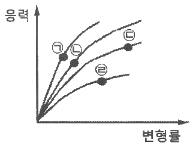
- ㉠
- ㉡
- ㉢
- ㉣
(정답률: 61%)